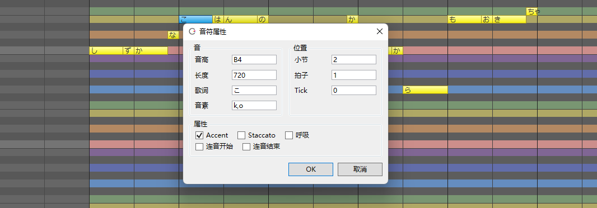
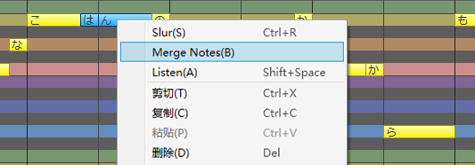
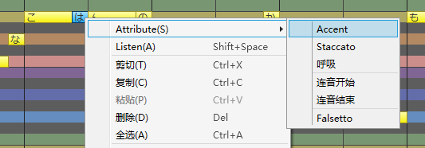
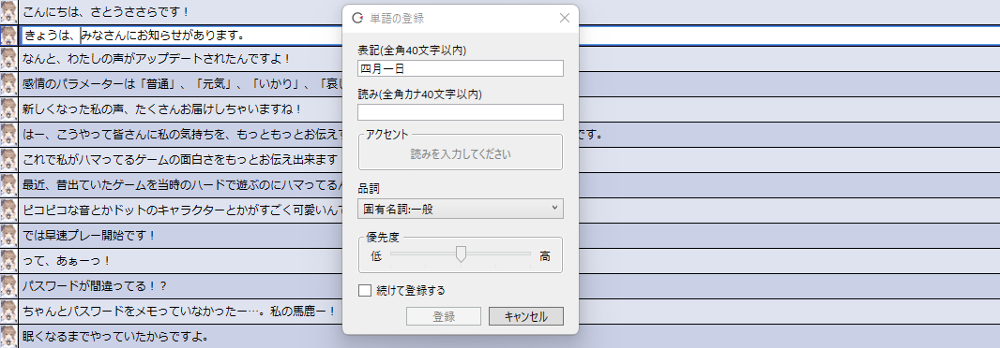

更新日志
8.3
2022/12/15 更新（版本号 8.3.22.0）
包含歌唱的 TIMING 调整、角色列表一览等可用性改进。
CeVIO AI 8.4 将于近日公开。※正式公开时可以在启动时通过自动更新升级。
※如果发现了问题和 bug，请使用这张表格报告。
▼歌唱相关
- 歌唱引擎更新到 6.2.0。
2022/10/12 更新（版本号 8.3.17.0）
▼歌唱 / 语音共通
在「选项」的「环境」中添加了「采样率」。
新支持以 32kHz/44.1kHz/96kHz 的采样率输出，用于混音之外的 WAV 输出。
{kind=link}
※以 96kHz 输出的音质与 48kHz 没有区别。
※未来的计划包括支持指定混音的格式和导入 24 位音频文件。
▼歌唱相关
- 歌唱引擎更新到 6.1.5。音质没有变化。
- 支持显示 9 条以上的来自其他轨道的音符。
- 修复了「星界」「すずきつづみ」保存到工程文件的感情参数无法复原的错误。
▼其他变化
- 其他错误改进与修复。
2022/9/6 更新（版本号 8.3.13.0）
▼歌唱相关
-
改善了「长段音符输入」。

※选中一个音符时，所有的歌词都会显示。选中多个音符时，只有选中音符的歌词才会显示（选择「按空格分割」时）。
※修复了粘贴后鼠标总会移至开始处的现象。
-
使用日语歌唱声库编辑歌词时，如果输入的是英文歌词，则不会打开输入法。
- 修复了在只粘贴歌词、合并音符、移动音符等特定情况下会弹出错误窗口的错误。
▼语音相关
- 语音引擎更新到 6.0.20。仅添加了新声库的支持，音质没有变化。
- 在耗时较长的过程中显示“忙”鼠标指针，例如在输入台词或调整感情之后。
- 现支持「CeVIO AI すずきつづみ」语音声库 1.0.1。
▼其他变化
- 修订了《CeVIO AI终端用户许可协议》。详情请看这里
- 「最近使用的项目」中打开的文件位置现在将会作为下一次使用「打开」时的默认文件路径。
- 其他错误改进与修复。
2022/8/7 更新（版本号 8.3.10.0）
▼歌唱相关
- 歌唱引擎更新到 6.1.4。音质没有变化。
-
实装「只粘贴歌词」功能。

※复制音符后，请在想要粘贴歌词的音符上调出鼠标右键菜单。
※歌词将反映在相对开始时间与复制源一致的音符上。请活用该功能，例如，使用该功能来创建合唱轨道。
-
音符属性中追加了「假声」。支持为多个音符批量设置假声。

※选择多个音符，打开「属性」，打开或关闭「假声」以批量设置假声。
※「重音」「连音」等参数同样可以在音符属性中批量设置。
-
修复了打开一个有多条歌唱轨道的项目后，从未调整过时间的轨道未显示在播放或导出 WAV 中的错误。
▼语音相关
- 修复了播放前的预渲染耗时超过一分钟时，应用会结束的错误。
▼其他变化
- 改进了未安装启动所需的 Windows 库时对微软下载页面的引导。
- 其他错误改进与修复。
2022/8/4 更新（版本号 8.3.7.0）
▼歌唱相关
-
垂直移动音符时暂停音高的自动追踪，启用该操作的按键改为 Alt 键（之前为 Shift 键）。
※使用 Up Down 移动音符时，按住 Alt 键同样也会暂停音高的自动追踪。
※Shift+Left Button 拖拽为水平 / 垂直移动音符。Shift+Up Shift+Down为将所选音符移动一个八度。
-
现在「长段歌词输入」功能可以粘贴换行的文本。。
- 添加了下列快捷键。
- Shift+2：叠加显示时间调整页（TMG）。
- Shift+3：叠加显示音量调整页（VOL）。
- Shift+4：叠加显示音高调整页（PIT）。
- Shift+5：叠加显示颤音的振幅调整页（VIA）。
- Shift+6：叠加显示颤音的周期调整页（VIF）。
- Shift+7：叠加显示音色调整页（ALP）。
▼语音相关
- 语音引擎更新到 6.0.19。音质没有变化。
- 日语语音字典更新到 3.0.15。追加了单词。
-
修正了对含有特定文本的台词做感情调整时应用程序强制结束的错误。
给您带来的不便我们诚挚地表示歉意。
▼其他变化
- 其他错误改进与修复。
2022/7/11 更新（版本号 8.3.6.0）
▼歌唱相关
-
修复了使用空格键停止播放后，无法执行撤销等操作的错误。
给您带来的不便我们诚挚地表示歉意。
2022/7/7 更新（版本号 8.3.5.0）
- 再次提高了撤销 / 重做的速度。
- 修复了一个移动音符时偶尔会出现的错误。
2022/6/30 更新（版本号 8.3.4.0）
▼歌唱相关
- 移动音符时，按下 Shift 键可以暂停音高的自动追踪。
- 修复了在停止播放后撤消时可能导致无法操作的错误。
2022/6/29 更新（版本号 8.3.3.0）
▼歌唱相关
- 添加了下列快捷键。
- Ctrl+Left、Ctrl+Right：切换编辑工具。※现在请使用 G H 进行钢琴卷帘的水平缩放。
- Ctrl+U：合并音符。
- 「合并音符」变为合并到选区的第一个音符上。
- 在选中音符时的右键菜单里添加了「自动分割英语歌词」和「消除休止符」的选项。
- 「消除短空白」变更为「消除休止符」。 改进后，即使只选择了一个音符，也可以填补与下一个音符的空白。 修复了在特定情况下执行有时会不起作用的错误。
▼语音相关
- 添加了下列快捷键。
- Ctrl+Tab：切换到下一个调整页面。
- Ctrl+Shift+Tab：切换到上一个调整页面。
▼其他变化
- 其他错误改进与修复。
2022/6/22 先行公开更新（版本号 8.3.2.0）

随着导出 24 位 / 32 位 float 的 WAV 文件、实装歌唱引擎的新功能与改善操作性、改良语音引擎的音素图等大量改进的追加，版本 8.3 现变得更易使用。
▼歌唱 / 语音共通
-
在「选项」的「环境」中添加了「WAV导出格式」。
WAV 现支持以 24 位 / 32 位 float 的比特深度导出，可以用于混音以外的场合。

※音频解析度会随比特深度变化，而非像以前一样使用 16 位变换。
※未来的计划包括支持 44.1kHz 等指定的采样率，指定混音文件的格式和 24 位音频文件的导入。
▼歌唱相关
- 歌唱引擎更新到 6.1.3。音质没有变化。
-
现支持设置重音 (Accent) 和断音 (Staccato)。 
可以通过「音符属性」，或者选中单个音符时从右键菜单中选择「选项」来设置。
※受角色和乐谱的影响，可能会有效果不明显的情况。
-
现支持设置新的强弱记号「ffff」「fff」「ppp」「pppp」。
※受角色和乐谱的影响，跟「ff」「pp」相比，可能会有效果不明显的情况。
-
实装了「合并音符」的功能。 
选中多个音符时，通过右键菜单可以将其合并。
选择范围的音符的歌词和属性将合并到选区的最后一个音符上。
-
右键菜单现在会依情况而变，这让设置音符变得更为容易。 
- 选中单个音符时，可以设置它的属性（重音、断音、连音、呼吸、假音）并试听。
- 选中多个音符时，可以设置连音，合并音符并试听。
- 「属性」一项只有在选中音符或节奏等才会显示。其他地方的菜单与以往一致。
-
现在，使用范围选择工具以外的工具移动音符时，若乐谱的参数已调整过，则这些参数也会自动随之移动。
※音高以及其他调整参数会自动追踪音符的移动。使用范围选择工具可以任意指定范围。
-
加快了下列操作的速度以提高操作反馈。
- 读取项目。
- 撤销 / 重做。
- 使用范围选择工具复制后粘贴、使用范围选择工具移动 / 剪切 / 删除音轨。
- 插入 / 删除小节。
- 节奏和拍子的追加 / 修改 / 删除。
- 使用方向键上下移动音符（开启自动试听时）。
-
改进了音素单位 / 音符单位的时间（TMG）的清除。
※当擦除音素/音符单位时，状态线不一定被初始化，而是按前一个/音素/音符的比例内插（调整时也是如此）。以前擦除后只保留部分状态线调整的情况现在已经得到改善，更容易在隐藏状态线的情况下使用。
-
「连续输入歌词」现在可以使用 Enter 键提交歌词。
- 添加了下列快捷键。
- Ctrl+Tab：切换到下一个调整页面。
- Ctrl+Shift+Tab：切换到上一个调整页面。
- Shift+Q：切换到下一个量化值。
- Shift+W：切换到上一个量化值。
- Shift+T：开启 / 关闭三连音。
- 调整了右键菜单等处「量化」的顺序。三连音现在放在下面。
- 现在支持导入扩展名为
.midi的 MIDI 文件。 - 在试听时打开右键菜单时，试听现在会自动停止。
- 修复了乐谱编辑页面的调整时间无法用橡皮擦擦除的错误。
- 修复了当鼠标光标移出调整屏幕然后返回时，鼠标光标不会变回笔等的错误。
- 修复了使用范围选择工具复制小节单位后，在特定情况下无法正确地粘贴节奏 / 拍子 / 调号 / 强弱记号的错误。
{kind=link}
{kind=link}
{kind=link}
▼语音相关
- 语音引擎更新到 6.0.18。音质没有变化。
- 日语语音字典更新到 3.0.14。
-
改进了音素图。
- 在 PIT 和 VOL 中，鼠标光标所在的长条柱现在会被垂直线所包围，以更容易理解操作的目标。
- PIT 或 VOL 的长条柱上方现在会显示音素名，以更容易调整。 通过音素图右键菜单的「在图内显示音素名」可以隐藏音素。
{kind=link}
▼其他变化
- 缩小了时间轴默认的缩放率。现在更容易看到时间轴。
- 在导入窗口中，现在默认显示对应下列扩展名的所有文件。
- 「导入台词文本」的
.txt和.srt - 「导入字幕文件」的
.srt和.sbv - 「导入MIDI音轨」的
.mid和.midi - 「导入MusicXML」的
.xml和.musicxml
- 「导入台词文本」的
- 「文件」菜单的「最近的工程」显示的文件上限现在扩大到 10 个。
- 修复了文件名中的
_（下划线）在「最近的工程」部分不显示的问题。 - 「トラックの固定」变更为「トラックのフリーズ」。
- 其他错误改进与修复。
8.2
2022/5/25 更新（版本号 8.2.9.0）
▼歌唱相关
- 歌唱引擎更新到 6.1.1。音质没有变化。
- 现在在乐谱编辑屏幕上将显示调整过的时间调整线（与 TMG 调整屏幕一致）。

- 修复了即使在时间调整屏幕中隐藏状态线，状态线也能被橡皮擦工具擦掉的错误。
- 修复了使用 Space 键停止播放后，未调整过的乐谱无法修改速度的错误。
- 修复了当乐谱编辑屏幕没有音符时，单击时间调整屏幕会弹出错误信息的错误。
- 修复了导入与当前编辑的乐曲速度不同的 MusicXML/MIDI/CCST 文件后，其他歌唱轨道的参数没有随之更新的错误。
▼语音相关
-
现在即使开着「注册单词」的窗口也能编辑台词。 
- 通过台词列表或「语音」菜单调出「注册单词」就可以边注册边编辑台词。如果是从「词典管理」中调出它的，则只能像以前一样单纯注册单词。
- 若启用了「连续注册」，则按下「注册」按钮后窗口也不会关闭。这样一来便可在输入一句台词后立刻注册单词。
- 若想修改正在查看的窗口中的已注册单词的「读作」或重音，请从「写作」中输入。
{kind=link}
▼其他变化
- 其他错误改进与修复。
2022/5/12 更新（版本号 8.2.8.0）
▼歌唱相关
-
现支持在乐谱编辑页面最下方以双击音素的方式直接编辑音素。

- 修改音符属性，或通过按下 Ctrl+P 切换到按音素输入歌词来编辑音素的方式依旧可用。
-
在错误的音素（以红色显示）中，日语声库中大写的日语元音字符 (
A,I,U,E,O) 现作为特例正常播放。- 尽管这些音素存在，但它们并不用于学习，只会生成噪音，但考虑到 8.1 以前使用的乐谱，我们依旧为其添加了播放支持。但是，这些音素不在官方规范范围内，所以它们均显示为错误的音素。
- 删除了版本 8.2.3.0 增加的用于测试的音素
xx。
-
乐谱编辑屏幕中的试听部分应与歌词的发声时间相匹配。
- 与此同时，废除了选项中的设定「试听前后的空白」。
- 将自动试听的默认设置改为开启。点击、输入或移动一个音符后可以自动试听。
- 修改的是安装时的设置。如果在版本更新之前就已在使用 CeVIO，请根据自己的喜好设置。
-
在钢琴卷帘的右键菜单中添加了「自动分割英语歌词」的设置。
- 用于在设置之间快速切换。和以前一样，也可以通过选项进行设置。
- 改进了一些快捷键的响应，例如使用 Ctrl 键切换编辑工具。
- 现支持 Ctrl+Space 的快捷键。
- 效果是将位置光标移至鼠标光标所在的位置。
- 修复了如果选定的多个音符之间有调号或强弱符号，则使用 Ctrl+R 会产生错误的错误。
- 修复了在出现音素错误的音符后，显示的音符音素错位，且修复该音素后，时间没有更新的错误。
{kind=link}
{kind=link}
▼语音相关
- 在音素图的右键菜单中添加了「部分自动试听」的设置。（注：对应的选项设置是「音素图调整部分自动试听」）
- 改进了使用 Ctrl 键切换编辑工具的响应。
- 修复了「导入台词文本」功能的一些错误。
▼其他变化
-
在语音轨道和音频轨道的右键菜单中添加了「多音轨自动排列」的设置。

- 用于在设置之间快速切换。和以前一样，也可以通过选项进行设置。
- 开启「自动排列台词」后，不同轨道的台词会自动调整位置以避免重叠。
开启「自动排列音频」后，音频会自动调整位置以避免重叠。 - 如果你不想移动台词或来自另一轨道的音频（让它们重叠），请关闭该选项。
-
在屏幕右侧角色图的右键菜单中添加了「大图」选项。
- 用于在设置之间快速切换。和以前一样，也可以通过选项进行设置。
- 其他错误改进与修复。
2022/4/28 更新（版本号8.2.4.0）
▼歌唱相关
- 修复了在乐谱编辑屏幕上停止播放后撤消时有时会导致无法操作的错误。
▼语音相关
- 修复了含有半角括号的台词无法注册到台词片段中的错误。
▼其他变化
- 其他错误改进与修复。
2022/4/26 更新（版本号8.2.3.0～8.2.4.0）
▼歌唱相关
日语声库现支持输入英语歌词。
通过将日语声库的音素分配给英语音素来实现歌唱。英语和日语能在同一首歌中混杂出现。
英文歌词会自动按音节分割并分配给音符。※需要在选项中打开「English lyrics are automatically divided by syllable」
即使在「连续输入歌词」中选择「以空格划分」，并混合输入日语和英语歌词时，英语音节也可以自动划分。
英文歌词中输入的假声符号「※」会自动转换为英文的「$」。※更新版本 8.2.4.0。
由于分配的是日语音素，发音会与原始的英语发音有所不同。
实现了一个新功能“在音符编辑页面调整 TMG”。
在音符编辑页面的下方能对音素时长做简单的确认与调整。
默认以音符为单位调整。按下 [Ctrl P] 或在 Song 的菜单栏里选择「以音素输入歌词」，可以将 TMG 的单位切换为音素。按住 [Alt] 键可以暂时切换。
以音符为单位调整时，会自动保持辅音和元音的原始长度比例。
在「设置」的「Song」的选项卡中加入了「在音符编辑页中调整 TMG/Timing Edit on Score」选项。 关闭该选项后，界面将恢复到 8.1 版本的样子。
TMG 调整页面现在可以隐藏状态线。
现在的默认设置为隐藏状态线，让其更容易看清，更方便操作。
在隐藏状态线的情况下，调整时会自动保证状态线之间的原始比率。
按下 [Ctrl I] 或在 Song 的菜单栏里选择「Line View→Timing Status Line」，可以切换状态线的显示状态。 打开该选项后，界面将恢复到 8.1 版本的样子（以音素为单位调整时）。
TMG 调整页面现在支持以音符为单位调整。
按下 [Ctrl Shift P] 可以将 TMG 的单位切换为音符。
按住 [Alt] 键可以暂时切换。
滑音现在以弧线的方式在钢琴卷帘里显示。 ※嵌套的滑音、无法匹配起始点与结束点的滑音现已禁用，并会以红色的弧线显示。废除了标尺栏的滑音显示。
角色名「KAFU」变更为「可不（KAFU）」。
为提高试听和自动试听按钮可见度的颜色改进。
修改了钢琴卷帘中标尺栏的默认设置。现在，默认开启速度和拍号，默认关闭调号和强弱符号 ※在 Song 的菜单里选择「Ruler View」，或在标尺栏中右键打开菜单，可以修改显示设定。 ※修改的是安装时的设置。如果在版本更新之前就已在使用 CeVIO，设置不会发生任何变化。
修复了带有音素错误（红色字母）的音符有时会错误地播放而不会失效的 bug。 ※更新版本 8.2.4.0
※可以将错误音素“xx”输入引擎中测试，但不会听到正确的声音。
修复了 [F8] 无法调出「连续输入音符」页面的 bug。
修复了跨小节的音符在小节边界处改变速度和时间符号时不能正确发声的 bug。
修复了在多个歌曲轨道的第一个轨道中调整后，改变速度和拍号，则在第一个轨道以外的其他轨道中无法反映的 bug。
▼与谈话引擎有关的变化
按住 [Alt] 键可以暂时切换 PIT / VOL / Length 的调整模式（以一个音素/音拍为单位）。
※以前只是部分支持 [Alt] 键。现在包括旧式音素在内，全部添加了对 [Alt] 键的支持。 ※也可以像以前一样通过 [Ctrl P] 进行切换。
从“文本文件”导入现在可以指定预设。
如果一行中有第二个逗号，例如“角色名称,对话内容,预设名称”，则将其视为预设。
例：『さとうささら,こんにちは、いい天気ですね,普段』
如果找不到对应的预设名称，则视为包含逗号的一行。
未指定预设名称（如『こんにちは』）或有换行（如『さとうささら,こんにちは』）的文本也能读取。
角色“ONE”现在也可以接受“OИE”的命名。 ※角色名变更为「OИE」后，「ONE」无法再被识别，但改进后，现在两个名字都能识别。
修正了在播放多个谈话轨道的对话时，角色图像只切换到选定轨道的角色的问题。
为提高试听和自动试听按钮可见度的颜色改进。
修改了「选项」中「Talk」选项的「文本文件字符编码」的默认设定。 导入：UTF-8 (BOM auto) 导出：UTF-8 ※从传统的 Shift JIS 改为 UTF-8 是目前的主流，例如记事本。 ※修改的是安装时的设置。如果在版本更新之前就已在使用 CeVIO，设置不会发生任何变化。
▼其他变化
在“选项”的“环境”中加入了“鼠标滚轮/Mouse wheel”。
※现在可以改变时间轴、钢琴卷帘和音素图（当 PIT / VOL 展开时）默认的滚动方向（纵向/横向）。
鼠标滚轮在时间轴标尺上的移动被固定为水平滚动。
添加了对「可不」限时免费试用版的支持。
「音乐的同位体 星界」Starter Pack初回版中包含了「可不」声库的限时免费试用版。
8.1.38.0 或更早版本无法验证许可证与使用。
限时免费试用版无法离线使用。
改进了使用 [Alt] 键切换调整模式的响应。 ※更新版本 8.2.4.0
其他错误改进与修复。
创建日期: 2022年5月13日